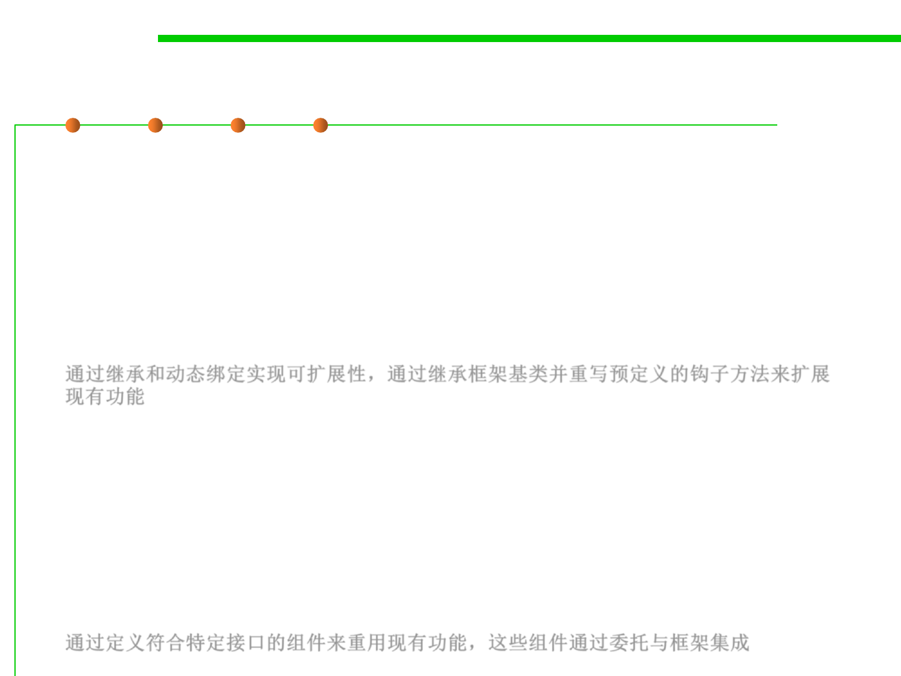

5.1 Metrics, Morphology and External Observations of Reusability
White-box and Black-Box Frameworks
▪ Whitebox frameworks:
– Extensibility achieved through inheritance and dynamic binding.
– Existing functionality is extended by subclassing framework base classes
and overriding predefined hook methods
– Often design patterns such as the template method pattern are used to
override the hook methods.
通过继承和动态绑定实现可扩展性，通过继承框架基类并重写预定义的钩子方法来扩展
现有功能
▪ Blackbox frameworks
– Extensibility achieved by defining interfaces for components that can be
plugged into the framework.
– Existing functionality is reused by defining components that conform to a
particular interface
– These components are integrated with the framework via delegation.
通过定义符合特定接口的组件来重用现有功能，这些组件通过委托与框架集成